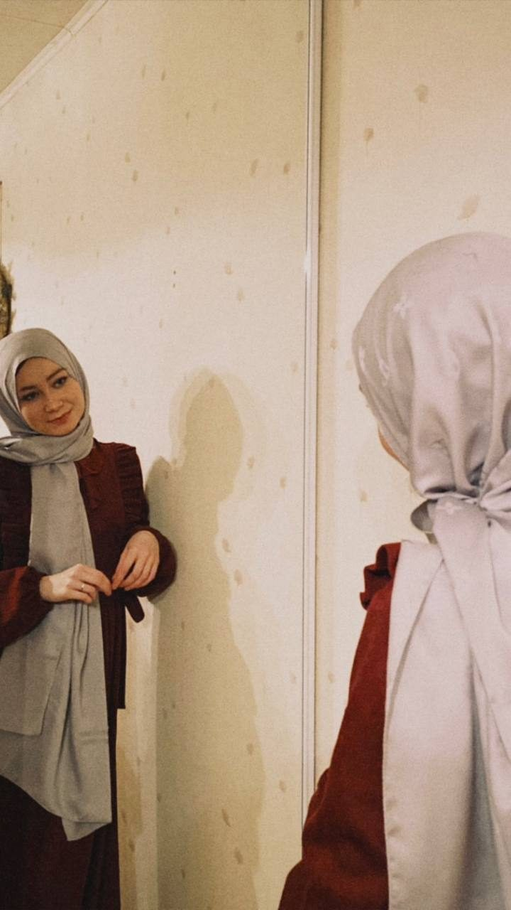
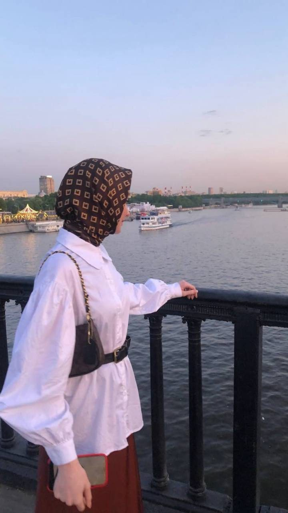
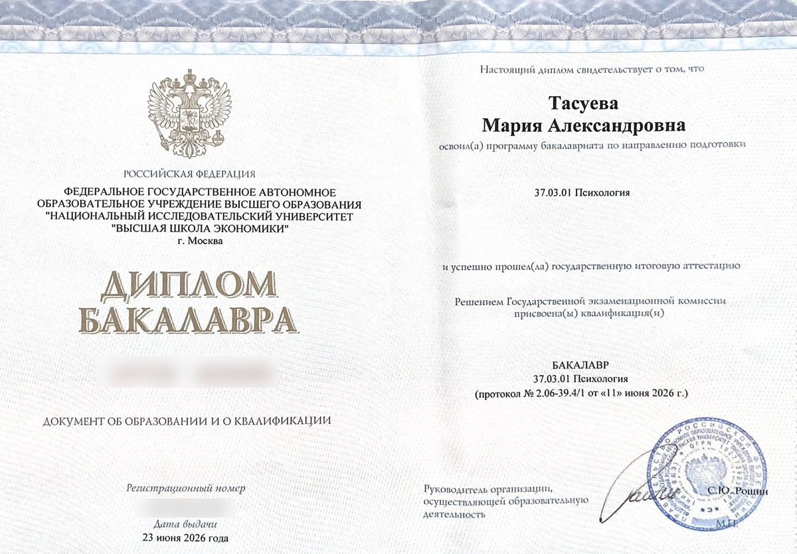
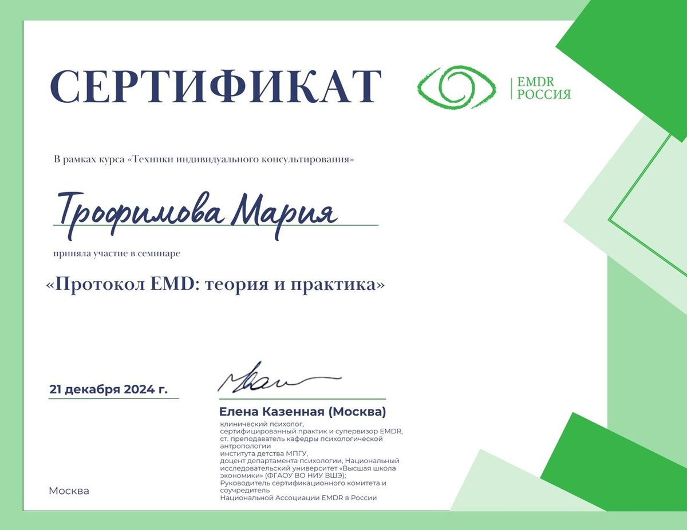

Психолог · онлайн · интегративный подход и КПТ
Психолог для женщин-мусульманок — с уважением к вашим ценностям
Помогаю справиться с тревогой, выгоранием и сложностями в отношениях. Безопасное пространство, где можно быть собой — без масок и оценок.
- 3 000 ₽ · 55 минут
- Онлайн · Яндекс Телемост
- 2,5 года практики

С чем я работаю
Работаю со взрослыми женщинами 18–45 лет. Опираюсь на ценностно‑ориентированный подход: учитываю религиозные и культурные особенности и помогаю использовать опоры веры как ресурс. При этом не даю религиозных советов и не заменяю духовного наставника.
Тревога
Внутреннее напряжение, которое не удаётся снять самостоятельно.
Отношения
Сложности с партнёром, семьёй, друзьями.
Самооценка
Синдром самозванца, постоянное обесценивание себя.
Выгорание
Усталость и потеря контакта с собой.
Жизненные кризисы
Переезд, смена работы, расставание.
Сложные решения
Трудно выбрать, ощущение «застряла».
Так часто звучит первая встреча
- «Я устала быть сильной для всех»
- «Не понимаю, чего хочу — как будто живу на автопилоте»
- «Хочу разобраться с тревогой и при этом не чувствовать, что предаю свои ценности»
Не работаю с химическими и игровыми зависимостями, тяжёлыми депрессивными состояниями с риском для жизни, острыми состояниями, требующими медикаментозного лечения. Не даю религиозных толкований. В таких случаях помогу найти профильного специалиста.

Обо мне
Меня зовут Мария Тасуева. Психология для меня началась с собственного опыта — я на себе почувствовала, как правильно выстроенная терапия меняет жизнь. Не резко, а постепенно, но ощутимо. Мне захотелось давать другим то, что когда‑то помогло мне.
В моём кабинете, даже онлайн, можно злиться, плакать, сомневаться — и не чувствовать осуждения. Я не ухожу от сложных тем, но и не тороплю. Работаю структурно, чтобы было понятно, куда мы движемся, и при этом остаюсь живой и настоящей. Клиенты часто говорят, что рядом со мной можно наконец выдохнуть.
- 2,5 годапрактики
- КПТв интегративном подходе
- НИУ ВШЭпсихологическое образование
- 2026НИУ ВШЭ, бакалавриат «Психология» (консультативная психология)
- 2024Семинар «Протокол EMD: теория и практика», EMDR Россия
- ВсегдаРегулярная супервизия и личная терапия — необходимая часть профессионального пути
Как проходит работа
- 01
Заявка
Пишете в Telegram или звоните. Обычно отвечаю в течение дня.
- 02
Знакомство
Рассказываю, как устроена терапия, вы — что привело. Не давлю и не тороплю в глубокие темы.
- 03
Регулярные встречи
55 минут раз в неделю, онлайн в Яндекс Телемосте. Двигаемся по важным для вас темам.
- 04
Изменения
Первое облегчение — обычно через 4–6 встреч. В среднем работа длится около полугода.
Образование и сертификаты


Частые вопросы
А что, если я не знаю, с чего начать?
Это нормально — большинство приходят с ощущением «что‑то не так», но без чёткого запроса. Первая встреча как раз для того, чтобы вместе сформулировать, с чем будем работать.
Я никогда не была у психолога. Мне будет неловко?
Неловкость на первых встречах — обычное дело. Вы не обязаны сразу открываться: темп задаёте вы, я подстраиваюсь.
Сколько нужно встреч, чтобы стало легче?
Обычно через 4–6 встреч появляется первое облегчение: становится понятнее, что происходит и почему. Глубокая работа чаще занимает от полугода.
А если мне не подойдёт ваш подход?
Такое бывает, и это нормально. Если на первых встречах мы поймём, что не подходим друг другу, я помогу найти специалиста, который подойдёт лучше.
Можно ли совмещать с приёмом антидепрессантов?
Да, терапия хорошо сочетается с медикаментозным лечением. Если у вас уже есть психиатр, мы можем работать параллельно.
Запишитесь на первую встречу
Обычно отвечаю в течение дня. Если написали вечером — скорее всего, отвечу утром. В выходные могу отвечать реже, но точно не пропадаю.